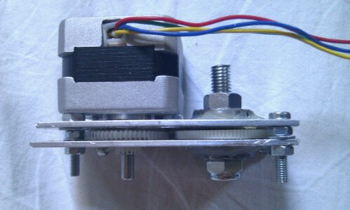
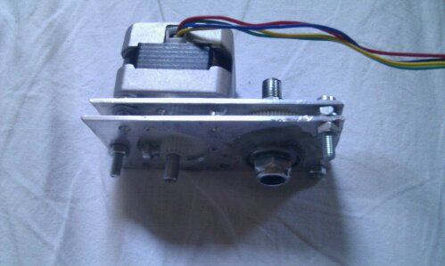

2010-08-25
Building a Repstrap (5): plastic filament extruder driver from scrap

"Hey Mark, what the hell is that weird looking thing again" ? To put it simply, the extruder driver of a reprap /repstrap machine is the part that MOVES the plastic filament that is going to be melted, using different methods (pinchwheels, cogs, you name it).
This was the part i feared the most from the beginning , since its almost the only part of the machine (with the extruder itself) that requires really specialised/more complex parts , or so i thought!
Here is how it actually went:
The good:
- this version you can see above was done after a bit of experimenting with all the cogs i managed to salvage from a few printers (i should call those goldmines, really)
- in the end these were the only two "compatible" cogs i could use in this design, as the one mounted on the motor's axis , is the only one i could modify to ensure that the cog does not "slide" on the axis when a lot of force is applied to it .
- the second cog (idler), is rotating freely thanks to two ball-bearings salvaged from my old roller-skates
The bad:
- i wanted to re-use one of the stepper motors i salvaged as well, but those clearly don't have the necessary torque unfortunately
- while it works surprising well with a PLA plastic filament, for some reason, i was never able to reliably make it work with ABS (another type of plastic, think legos) , it might be because of the plastic itself , the slightly larger diameter of the ABS filament , or perhaps simply because of the shoddy construction
- i will frankly say i don't believe this system will work reliably in the long term, so one of the FIRST things i will print on the machine as soon as it works, is simply all the replacement parts for a better extruder
The ugly:
- while you will find proof in the video below that it is indeed possible to have a working, semi-reliable extruder driver from scrap, it can never go beyond a temporary solution
- the whole thing is approximate at best, and not practical to mount on the machine itself
- if i do not manage to print out replacement parts quite fast and this mechanism breaks down, i will really be in trouble , since i would really like to avoid having to shop for some additional parts again
To give you a better idea of how it works here is another picture and a video:

{kind=link}
{kind=link}